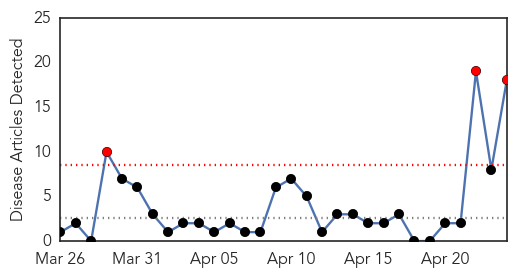

30 Day Trends
Web: 3 alerts, 0 warnings
Twitter: 1 alerts, 0 warnings
Top Articles:
- 0.991
- الاخبار المصورة
- 0.990
- Niger meningitis: Vaccination starts after schools closure
- 0.989
- Niger meningitis death toll rises to 129: minister
- 0.982
- Niger battles deadly meningitis epidemic
- 0.951
- Mass vaccination starts
- 0.915
- Meningitis puts young people at risk
- 0.787
- World's 1st Malaria Vaccine Only Works In A Third Of Cases; Creator Still Insists It's Worthy Of Worldwide Application
- 0.783
- Malaria vaccine is a letdown but could still reduce cases
- 0.772
- Malaria vaccine a letdown, but could reduce cases - study
- 0.748
- First malaria vaccine for children could be recommended for use by autumn
- 0.723
- GlaxoSmithKline : Malaria vaccine candidate has demonstrated efficacy over 3-4 years of follow-up
- 0.717
- Doctor: Vaccines result in healthy immune system
- 0.684
- Final trial results of the world's most advanced malaria vaccine announced
- 0.626
- Hope over child malaria vaccine tests
- 0.564
- Malaria vaccine given green light by EU regulators
- 0.548
- Local charity highlights global project on World Meningitis Day
- 0.538
- Niger: Niger battles deadly meningitis epidemic
- 0.519
- Malaria vaccine candidate promising; could potentially prevent disease in millions
Top Tweets:
-
No tweets found for Apr 24, 2015
Web/News Articles
Tweets

Article Locations